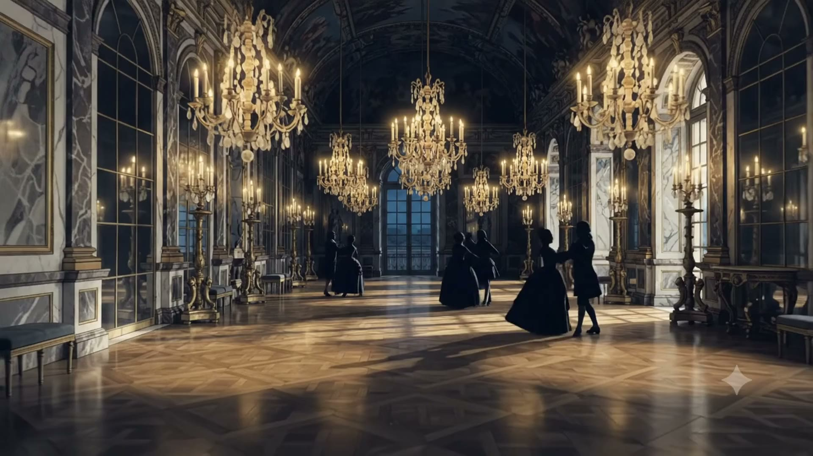
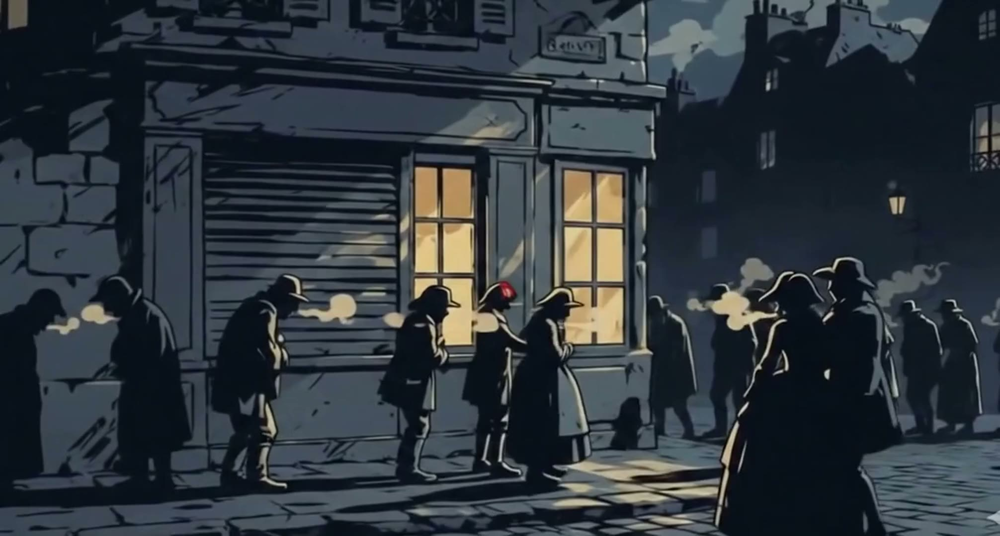

Paris, 1789. La fête achève.
À Versailles : de l'or, des gâteaux, dix mille chandelles. Dehors : tous ceux qui ont payé pour ça. Fais défiler, et regarde la foule grandir derrière toi.
Pendant ce temps, dans les rues
Pas de pain. Pas d'argent. Plus de patience.
L'hiver 1788-1789 est glacial, les récoltes ont manqué, et le pain devient si cher qu'une seule miche peut avaler presque toute la paie d'une journée. Pendant ce temps, la France est ruinée : le roi Louis XVI a englouti des fortunes, entre autres pour aider... la révolution américaine. Ironique, non ?
Sa solution : encore des taxes pour ceux qui ont le moins. La société est coupée en trois « ordres » : le clergé, la noblesse, et le tiers état. Les deux premiers ne paient presque rien. Le troisième, 97 % de la population, paie tout.
Juin 1789 · Le serment du Jeu de paume
Le roi convoque les états généraux pour trouver de l'argent. Le tiers état en profite pour se déclarer « Assemblée nationale ». Chassés de leur salle, les députés se réfugient dans une salle de jeu de paume, l'ancêtre du tennis, et jurent de ne jamais se séparer avant d'avoir donné une constitution à la France. Une révolution qui commence sur un terrain de sport.

14 JUILLET. À L'ASSAUT.
La Bastille tombe
Le 12 juillet, un jeune journaliste, Camille Desmoulins, monte sur une table et appelle Paris aux armes. Deux jours plus tard, la foule prend la forteresse-prison du roi, symbole de son pouvoir absolu. Elle ne contenait que sept prisonniers. Tout le monde s'en fichait : c'était pour montrer au roi à qui Paris appartenait vraiment. Trois semaines après, dans la nuit du 4 août, les nobles paniqués abolissent leurs propres privilèges. Mille ans de règles effacées en une nuit.
Octobre 1789 · La marche des femmes
Ce sont les femmes qui vont chercher le roi.
Le pain manque encore. Alors des milliers de femmes de Paris marchent sous la pluie jusqu'à Versailles, armées de piques et de casseroles, envahissent le château et ramènent la famille royale à Paris. Le roi vivra désormais sous les yeux de son peuple. La reine Marie-Antoinette, qu'on accusait de dire « qu'ils mangent de la brioche » (elle ne l'a probablement jamais dit), devient la personne la plus détestée de France.
Juin 1791 · La fuite à Varennes
Le roi tente de s'enfuir de nuit, déguisé en valet, carrosse chargé et famille à bord. Manque de chance : à Varennes, on le reconnaît... notamment grâce à son portrait imprimé sur l'argent. Ramené à Paris sous escorte, il a perdu la confiance du peuple pour toujours. Un an plus tard, la monarchie tombe : le 21 septembre 1792, la France devient une République.
Août 1789
Ils ont écrit les nouvelles règles.
La Déclaration des droits de l'homme et du citoyen. Dix-sept articles. Voici ceux qui ont tout changé.
Ça te dit quelque chose ? Les chartes des droits modernes, partout dans le monde, reprennent encore ces lignes. C'est la partie devoir d'école. C'est aussi la partie qui a duré.
1793. La partie sombre.
La République est en guerre contre la moitié de l'Europe et a peur des traîtres. Le 21 janvier 1793, Louis XVI est guillotiné devant une foule immense. Marie-Antoinette le suit en octobre. Puis la machine s'emballe : sous Robespierre, c'est la Terreur. Environ 17 000 personnes sont condamnées à mort, souvent après des procès de quelques minutes. La machine se voulait « humaine », rapide. Elle est surtout horriblement occupée.
Continue de défiler. La lame est entre tes mains maintenant.
La révolution s'est mise à dévorer les siens.
Juillet 1794 : Robespierre monte à son tour à l'échafaud. La Terreur meurt avec celui qui l'avait nourrie.
Après la tempête
Les rois sont revenus. Les idées, elles, sont restées.
En 1799, un jeune général nommé Napoléon Bonaparte ramasse le pouvoir, et plus tard, d'autres rois reviendront même s'asseoir sur le trône. Mais impossible de remonter le temps : les privilèges sont morts, la loi est la même pour tous, et « libres et égaux en droits » ne peut plus se dédire. Liberté, Égalité, Fraternité est aujourd'hui la devise de la France, et toutes les démocraties modernes défilent encore à travers 1789.